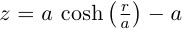

3.5 A custom surface curve model
Common curve models are available in the Curve namespace but extending this set with user-defined models is easy, as explained in this tutorial.
3.5.1 Writing the curve model class
In this example, we chose to model a rotationally symmetric catenary curve. This curve has the following sagitta formula:

Our curve model needs to provide several functions in order to be useful to the raytracer. Fortunately there are base classes which provide default implementations for most curve model functions. This include differentiation functions and ray intersection functions.
The Curve::Rotational class allows modeling rotationally symmetric curves by only dealing with 2d formulas. Our model class just has to inherit from this class and provide an implementation for the sagitta function:
// code from examples/curve_model/usercurve.cc:56
class MyCatenaryCurve : public Curve::Rotational
{
public:
MyCatenaryCurve(double a)
: _a(a)
{
}
private:
double sagitta(double r) const
{
return _a * cosh(r / _a) - _a;
}
double _a;
};
The model can be improved by specifying the derivative function. This make calculations more efficient by avoiding use of the default numerical differentiation implementation:
double derivative(double r) const
{
return sinh(r / _a);
}
Although more functions from Curve::Base and Curve::Rotational can be reimplemented to further improve model efficiency, this curve model can readily be used in an optical design.
3.5.2 Using the new model in optical design
To check our model, we then use it in a simple optical system composed of a point source, a mirror and an image plane. The catenary mirror resemble a parabolic mirror as used in a newton telescope.
Sys::System sys;
// light source
Sys::SourcePoint source(Sys::SourceAtInfinity, Math::vector3_001);
sys.add(source);
// mirror
Shape::Disk shape(200);
MyCatenaryCurve curve(-3000);
Sys::Mirror primary(Math::Vector3(0, 0, 1500), curve, shape);
sys.add(primary);
// image plane
Sys::Image image(Math::vector3_0, 15);
sys.add(image);
The best point of focus is slightly offset from the parabola focal length. We use the Analysis::Focus class to find the best point of focus and move the image plane at this location:
Analysis::Focus focus(sys);
image.set_plane(focus.get_best_focus());
Finally we plot some spot diagrams using the Analysis::Spot class. The point light source is rotated for each diagram:
Io::RendererSvg renderer("spot.svg", 200 * 3, 200 * 2, Io::rgb_black);
renderer.set_margin_ratio(.35, .25, .1, .1);
renderer.set_page_layout(3, 2);
for (int i = 0; i < 6; i++)
{
Analysis::Spot spot(sys);
renderer.set_page(i);
spot.draw_diagram(renderer);
source.rotate(0, .1, 0);
}